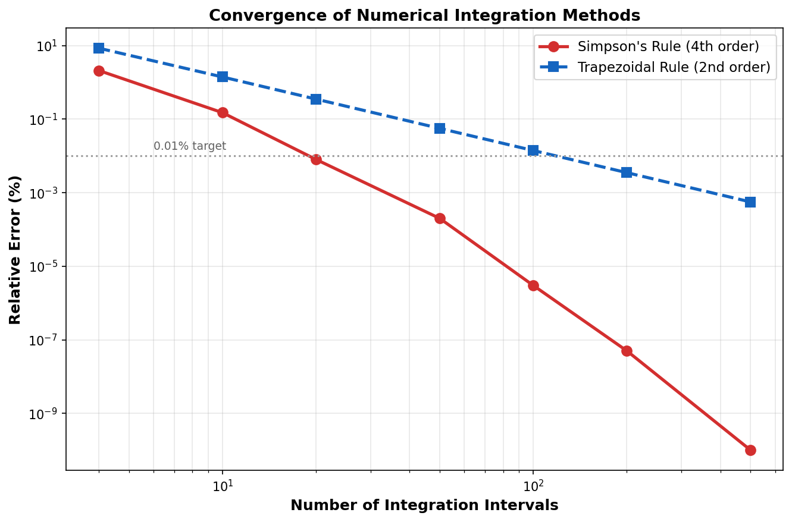
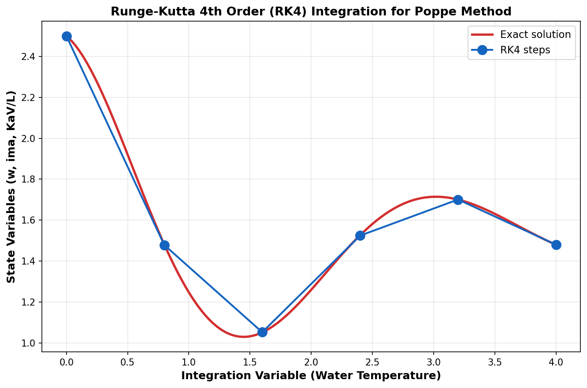

Numerical Methods¶
Overview¶
Both the Merkel and Poppe methods require numerical integration to solve the governing equations. This section details the specific numerical techniques implemented and their convergence properties.

Simpson's 1/3 Rule (Merkel Method)¶
Formulation¶
For a function \( f(x) \) on the interval \([a, b]\) divided into \( n \) equal subintervals (n must be even):
where \( h = (b-a)/n \) and the coefficients are:
Error Analysis¶
The error bound for Simpson's rule is:
This 4th-order convergence means that doubling the number of intervals reduces the error by a factor of 16.
Implementation Note¶
Incremental Air Enthalpy Update
Unlike a standard integral where the integrand depends only on the integration variable, the Merkel integral has a coupled integrand — the air enthalpy \( h_a \) at each point depends on the cumulative heat exchange from previous steps. Therefore, the Simpson's rule coefficients apply to the integrand values, but the air enthalpy must be updated incrementally at each step:
The implementation ensures even \( n \): if the user specifies an odd number of increments, it is automatically incremented by 1.
Runge-Kutta 4th Order — RK4 (Poppe Method)¶
Formulation¶

The classical RK4 method advances the solution from step \( i \) to step \( i+1 \):
where \( \mathbf{y} = [w, \, h_a, \, Me]^T \) is the state vector and \( h = dT_w \) is the step size.
Error Analysis¶
The local truncation error of RK4 is \( O(h^5) \), giving a global error of \( O(h^4) \). With \( N = 50 \) steps over a 10 K range (step size = 0.2 K), the error is:
Bisection Solver (Rating Mode)¶
In Rating mode, the water outlet temperature is unknown and must be found iteratively. The solver exploits the monotonic relationship between assumed \( T_{w,out} \) and the calculated KaV/L:
- Lower \( T_{w,out} \) (colder water) implies a larger KaV/L (more cooling required)
- Higher \( T_{w,out} \) (warmer water) implies a smaller KaV/L (less cooling required)
Algorithm¶
Input: Tw_in, KaV/L_target, Twb, Tdb, L/G, Patm
Output: Tw_out
1. Set Tw_low = Twb + 0.1 K (physical minimum)
2. Set Tw_high = Tw_in - 0.1 K (physical maximum)
3. For iter = 1 to 200:
a. Tw_mid = (Tw_low + Tw_high) / 2
b. KaVL_calc = CalcKaVL(Tw_in, Tw_mid, ...)
c. If KaVL_calc > KaVL_target:
Tw_low = Tw_mid (calculated tower overcools)
Else:
Tw_high = Tw_mid (calculated tower undercools)
d. If |Tw_high - Tw_low| < 0.0001 K: CONVERGED
4. Return Tw_out = (Tw_low + Tw_high) / 2
Convergence Properties¶
| Iteration | Temperature Window |
|---|---|
| 1 | ~ 10 K |
| 5 | ~ 0.3 K |
| 10 | ~ 0.01 K |
| 14 | ~ 0.0006 K |
| 17 | < 0.0001 K (converged) |
The bisection method always converges (guaranteed for continuous monotonic functions) in at most \( \lceil \log_2(\Delta T / \epsilon) \rceil \) iterations. For a 20 K range and 0.0001 K tolerance, this requires at most 18 iterations.
Why Bisection?
While Newton-Raphson or Brent's method would converge faster, the bisection method was chosen for its unconditional reliability. Each KaV/L evaluation involves a full Simpson/RK4 integration, so the derivative is expensive to compute. With only ~17 iterations needed, the overall computational cost is negligible.
Default Parameters¶
| Parameter | Value | Description |
|---|---|---|
| Simpson intervals | 50 | Default for Merkel method |
| RK4 steps | 50 | Default for Poppe method |
| Bisection tolerance | 0.0001 K | Outlet temperature convergence |
| Bisection max iterations | 200 | Safety limit (typically converges in ~17) |
References¶
-
Burden, R.L. and Faires, J.D. Numerical Analysis, 10th Edition. Cengage Learning, 2015. ISBN: 978-1305253667.
-
Press, W.H., Teukolsky, S.A., Vetterling, W.T. and Flannery, B.P. Numerical Recipes: The Art of Scientific Computing, 3rd Edition. Cambridge University Press, 2007. https://numerical.recipes/ ISBN: 978-0521880688.